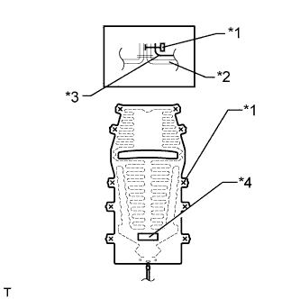
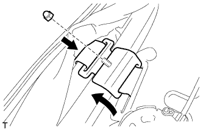
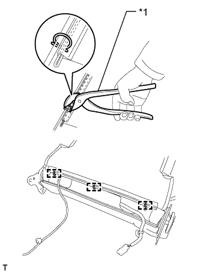

ПОДОГРЕВАТЕЛЬ СПИНКИ ПЕРЕДНЕГО СИДЕНЬЯ (для сидений с ручным приводом) > УСТАНОВКА |
| 1. УСТАНОВИТЕ ПОДОГРЕВАТЕЛЬ СПИНКИ ЛЕВОГО ПЕРЕДНЕГО СИДЕНЬЯ В СБОРЕ |
|  |
Установите подогреватель спинки сиденья, обратив сторону со штампом наименования к обивке спинки сиденья.
| *1 | Стяжка |
| *2 | Обивка спинки сиденья |
| *3 | Подогреватель спинки сиденья |
| *4 | Штамп наименования |
Закрепите подогреватель спинки сиденья новыми закрепками.
| 2. УСТАНОВИТЕ ОБИВКУ СПИНКИ РАЗДЕЛЬНОГО ПЕРЕДНЕГО СИДЕНЬЯ |
Установите обивку подушки сиденья на подушку сиденья и закрепите ее новыми витковыми пружинами, используя щипцы для витковых пружин.
| *A | для типа A | *B | для типа B |
| *1 | Щипцы для витковых пружин | - | - |
Введите в зацепление 4 захвата, чтобы установить 2 держателя подголовника.
|  |
Для моделей с боковой подушкой безопасности переднего сиденья:
Подсоедините держатель обивки спинки сиденья к подушке спинки сиденья.
Установите держатель обивки спинки сиденья на раму сиденья и закрепите гайкой.
Закройте 2 крепления, а затем закройте обивку спинки сиденья.
| *A | для сиденья с тканевой обивкой | *B | для сиденья с кожаной обивкой |
|  |
С помощью щипцов для витковых пружин установите 3 новые витковые пружины.
| *1 | Щипцы для витковых пружин |
Подсоедините разъем подогревателя сиденья и закрепите зажим жгута проводов.
Установите резиновую ленту на пружину подушки сиденья.
| 3. УСТАНОВИТЕ ПЕРЕДНЕЕ СИДЕНЬЕ В СБОРЕ |
Установите переднее сиденье в сборе (Нажмите здесь).